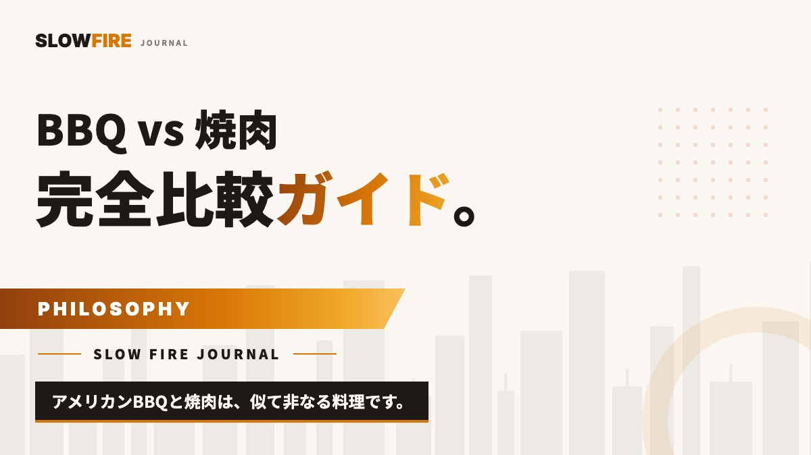

BBQ vs 焼肉 完全比較ガイド — 温度・時間・思想の決定的な違い
「BBQと焼肉って、何が違うの？」——そう聞かれて、すっと答えられる人って意外と少ないんですよね。実は、日本でBBQと呼ばれているものの多くは、世界の基準でいうと「焼肉スタイル」なんです。アメリカ南部やテキサスで「BBQ」と言ったら、それはまったく別の料理を指します。この記事では、温度・時間・部位・調味・思想・楽しみ方の6軸で、両者の決定的な違いを、表とデータで一緒に見ていきますね。

そもそも「BBQ」と「焼肉」は別の料理
日本でBBQと言うと、河原や庭先で薄切り肉を網でジュッと焼くスタイルを思い浮かべますよね。これ、世界の基準でいうと「焼肉スタイルのアウトドア版」に分類されるんです。一方で、アメリカ南部・テキサス・カンザスシティ・カロライナあたりで「BBQ」と呼ばれている料理は、110〜120℃の低温で4〜14時間かけて塊肉を焼き上げる料理なんですよね。同じ「肉を火で焼く」という見た目は共通していても、内側のロジックがまったく違います。どちらが上ということではなくて、別の料理体系として並び立つ2つなんだと思います。この記事では、それを6軸で一緒に整理していきますね。
軸①：温度 — 300℃と110℃の世界
最も決定的な違いは温度です。同じ「肉を焼く」でも、扱う温度帯が3倍違います。焼肉スタイルは 250〜350℃ でダイレクト調理（火の真上）、蓋なしの輻射熱中心。アメリカンBBQは 110〜120℃ でインダイレクト調理（火から離す）、蓋を閉めて対流熱で焼く対流オーブンに変身します。
300℃と110℃。たった200℃の差ですが、これは 水の沸点を境にした別世界 です。300℃では肉の表面が一瞬で焦げて香ばしくなり、内側はジューシーに保たれる。110℃では肉の内部温度がゆっくり上がり、コラーゲンが時間をかけて溶ける。ロー&スローの本質は、この「低い温度を維持する技術」にあります。
軸②：時間 — 10分と10時間の体験差
温度が違えば、必要な時間も違います。焼肉が1〜3分／枚、焼肉スタイルBBQの厚切りで10〜30分。一方アメリカンBBQは バックリブで4〜5時間、プルドポークで8〜12時間、ブリスケットで10〜14時間です。
焼肉スタイルは「焼いて、食べて、また焼く」のリズムが料理の主成分。会話と並行して進む短い時間の連続です。一方アメリカンBBQは「朝6時に火を入れて、夕方の夕食まで待つ」料理。料理時間そのものが目的化します。サウナや森林浴に近い、神経系の整い方をもたらす体験です。
軸③：部位と肉の形状
| 項目 | 焼肉スタイル | アメリカンBBQ |
|---|---|---|
| 形状 | 薄切り（数mm〜1cm） | 塊（1〜6kg） |
| 主役の牛部位 | カルビ・ロース・タン・ハラミ | ブリスケット・ショートリブ |
| 主役の豚部位 | 豚バラ・肩ロース薄切り | 豚肩ロース塊・バックリブ |
| 求められる性質 | 霜降り・柔らかさ | コラーゲン・脂肪 |
焼肉では「霜降りで柔らかい肉」が至高ですが、アメリカンBBQでは コラーゲンが豊富な部位 が至高です。ブリスケット（牛胸肉）も豚肩ロースも、日本の焼肉文化ではあまり使わない部位。低温長時間でしか美味しくならない 部位だからです。逆にA5和牛のサーロインをアメリカンBBQにすると、脂が抜けて台無しになります。料理が違えば、肉の選び方も真逆になります。
軸④：調味 — タレとラブの設計思想
| 項目 | 焼肉のタレ | アメリカンBBQのラブ |
|---|---|---|
| 形状・タイミング | 液体・焼けた肉に絡める | 粉末・生肉に擦り込む |
| 主成分 | 醤油・砂糖・果物・にんにく | 塩・砂糖・パプリカ・スパイス |
| 糖分の役割 | 甘みとコク | バーク形成と色味 |
| 長時間加熱 | ×（焦げる） | ◎（バークになる） |
焼肉のタレは「焼けた肉に絡める」設計、ラブは「生肉に擦り込んで長時間一緒に焼く」設計。ラブの糖分は10時間のスモークで 深褐色のバーク（樹皮状の外皮） に変化します。バークこそアメリカンBBQの代名詞であり、ラブはバークを作るための素材です。詳細用語は BBQ用語12選。
軸⑤：思想 — 化学反応の主役が違う
| 項目 | 焼肉スタイル | アメリカンBBQ |
|---|---|---|
| 主役の反応 | メイラード反応（〜180℃） | コラーゲン分解（60〜75℃域） |
| 狙う食感 | 焼き目・中ジューシー | 口でほどける・繊維がほぐれる |
| キー温度 | 表面温度 | 中心温度（90〜95℃） |
焼肉は 表面で起きるメイラード反応 が味の主役。120〜180℃で起きる香ばしさを、5分以内に成立させる料理です。一方アメリカンBBQの主役は コラーゲン分解。60〜75℃を肉の中心が長時間通過することで、結合組織がゼラチン化し、繊維がほぐれる食感が生まれます。だからアメリカンBBQには 肉用温度計が必須。時間や見た目ではなく、中心温度の数字だけが完成を判断します。
同じ肉でも、化学反応が違えば別の料理
低温長時間で起きる「コラーゲンのゼラチン化」は、高温短時間では絶対に起きません。逆に強い焼き目は110℃のスモーカーでは出ません。両者は補完関係にあり、優劣を語る対象ではありません。
軸⑥：楽しみ方 — 会話の料理と時間の料理
| 項目 | 焼肉スタイル | アメリカンBBQ |
|---|---|---|
| 軸となる時間 | 会話の時間 | 火と過ごす時間 |
| 適した人数 | 4〜20人 | 1〜8人 |
| 必要な道具 | 網・コンロ・トング | 蓋付きスモーカー・温度計 |
| 前準備 | 当日に肉を切る程度 | 前日からドライブライン・ラブ |
| 気分の動き | 賑やか・興奮 | 静か・没入 |
焼肉スタイルは「人と話すための装置としての火」、アメリカンBBQは「自分と向き合うための装置としての火」。同じ「火を囲む文化」の中の、別の表現です。
総合比較表と使い分け
ここまでの6軸を1枚の表に集約し、シーン別の使い分けまで示します。
| 軸 | 焼肉スタイル | アメリカンBBQ |
|---|---|---|
| 温度・時間 | 250〜350℃ / 5〜30分 | 110〜120℃ / 4〜14時間 |
| 肉の形状・調理 | 薄切り・ダイレクト・蓋なし | 塊1〜6kg・インダイレクト・蓋あり |
| 調味・化学反応 | 塩/タレ・メイラード反応 | ラブ/ソース・コラーゲン分解 |
| キー温度・楽しみ方 | 表面温度・会話と気軽さ | 中心温度・時間と没入 |
| 適した人数・完成品 | 4〜20人・焼き目とジューシー | 1〜8人・口でほどけるバーク |
シーン別の使い分け
| シーン | おすすめ |
|---|---|
| 会社・友人10人以上の集まり | 焼肉スタイル（会話と並行できる） |
| パーティーで主役を出したい | アメリカンBBQ（朝から仕込みの儀式感） |
| 1〜2人で火を楽しみたい | アメリカンBBQ（火と過ごす時間が主役） |
| キャンプの夜・河原 | 焼肉スタイル（道具がシンプル） |
| 誕生日・記念日 | アメリカンBBQ（10時間の工程が特別感） |
2つは敵対する選択肢ではなく、場面で使い分ける2つの引き出し。焼肉スタイルしか知らない状態は、世界のBBQ文化の半分しか持っていないのと同じです。次の一歩は 焼肉スタイルのBBQに飽きたら へ。最初の一品候補は プルドポーク と ブリスケット。
CONCLUSION
結論
BBQと焼肉は 同じ料理の派生ではなく、別の料理体系。温度300℃と110℃、時間10分と10時間、メイラード反応とコラーゲン分解、会話の料理と時間の料理。6軸すべてで設計思想が反対側を向いています。「どちらが好きか」ではなく、「今日の自分はどちらの体験を求めているか」で選ぶ。SLOW FIRE は、まだ日本に定着していないアメリカンBBQの世界の入り口でありたいと思っています。
FAQ
BBQと焼肉の違いについてよくある質問
BBQと焼肉は何が一番違いますか？
一番の違いは「温度と時間」。焼肉は250〜350℃で5〜30分の高温短時間、アメリカンBBQは110〜120℃で4〜14時間の低温長時間。化学反応の主役（メイラード vs コラーゲン分解）から思想まで別物です。
アメリカンBBQと焼肉、どちらが美味しいですか？
優劣はありません。焼肉は「噛んだときのジューシーさと脂の弾け」、アメリカンBBQは「口でほどける食感と燻香の深さ」。求める体験が違うので、場面で使い分けるのが正解です。
焼肉用の肉でアメリカンBBQはできますか？
できません。薄切り肉を低温長時間にかけると水分が抜けて固くなるだけ。アメリカンBBQは1〜6kgの塊肉（ブリスケット・ボストンバットなど）が前提です。
焼肉のタレはアメリカンBBQで使えますか？
向きません。焼肉のタレは「焼けた肉に絡める」設計、ラブは「生肉に擦り込んで長時間焼く」設計。糖分の多い焼肉タレを長時間加熱すると焦げます。
日本で本格BBQを楽しむには何から始めればいい？
①蓋付きグリル → ②肉用温度計 → ③塊肉 → ④ラブ の順に揃え、最初の一品はプルドポーク。10時間後に口でほどける肉を食べた瞬間、焼肉とは別物の料理だと体感できます。
FIRST RUB
アメリカンBBQを始める最初の1本
焼肉スタイルから次の世界へ。塊肉に擦り込む、最初のラブ。